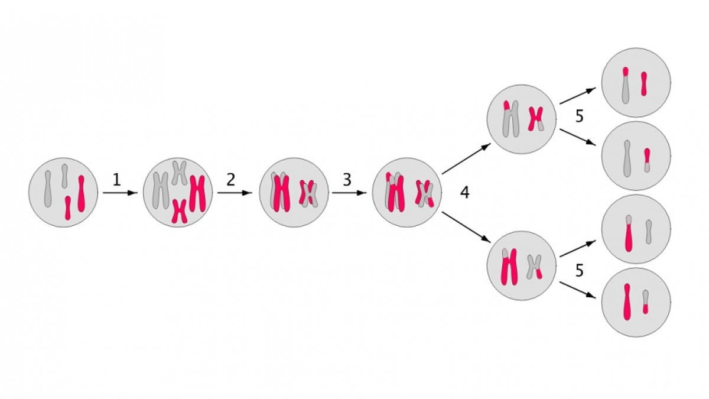
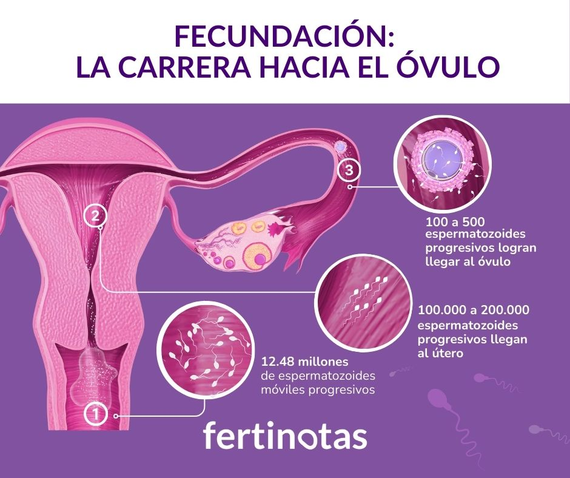
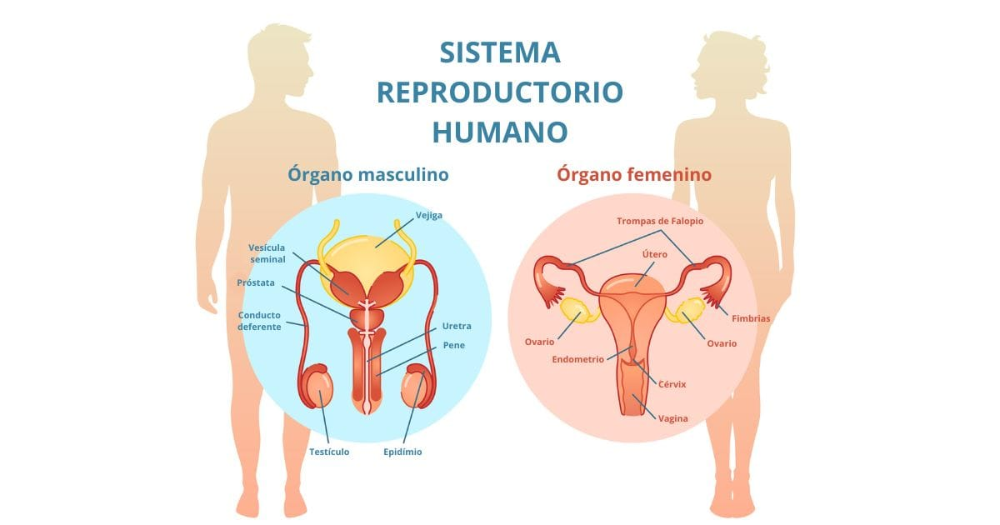
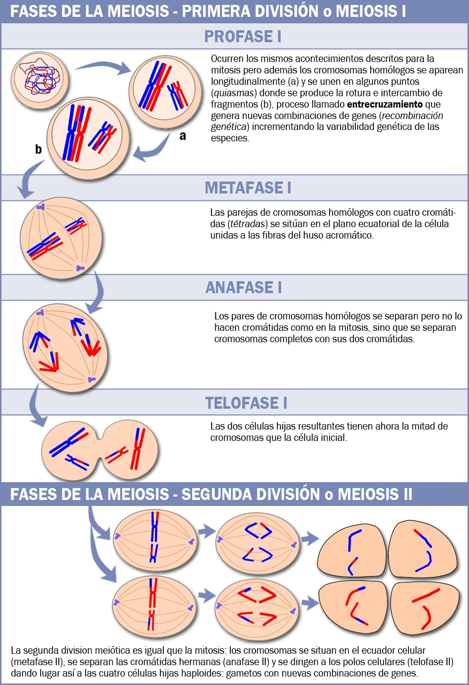
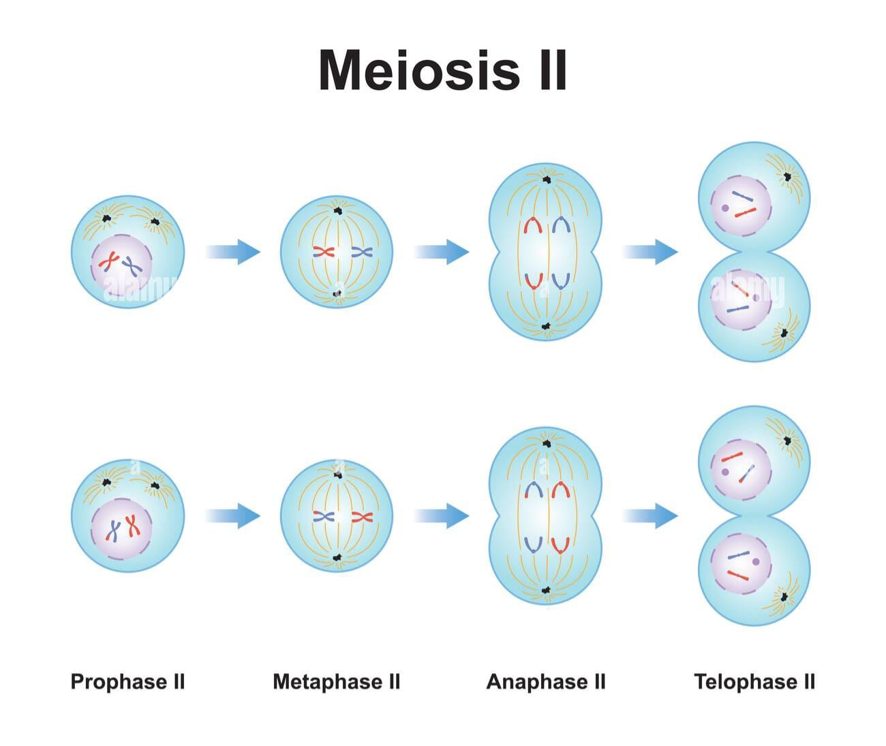
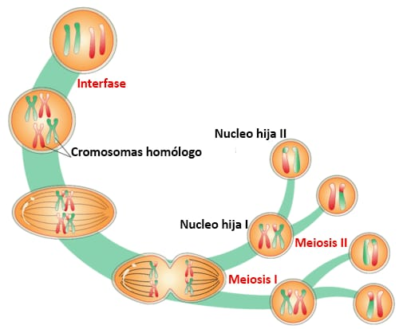

📚 Explorá la meiosis
Elegí un tema para comenzar.
🧬 1. ¿Qué es la meiosis?
📖 Definición complementaria:
La meiosis es un tipo de división celular especializada que permite formar células con la mitad de la cantidad de cromosomas que tiene una célula original. Durante este proceso, el material genético se reorganiza y se generan células diferentes entre sí.

❓ ¡Ponete a prueba!
¿Qué ocurre con la cantidad de cromosomas durante la meiosis?
🎯 2. ¿Para qué sirve?

📖 ¿Qué estamos viendo?
La meiosis permite producir células sexuales, como los óvulos y los espermatozoides. Estas células tienen la mitad de los cromosomas.
❓ ¡Ponete a prueba!
¿Cuál es una función principal de la meiosis?
📍 3. ¿Dónde ocurre la meiosis?

📖 ¿Qué estamos viendo?
La meiosis ocurre en las células que participan en la formación de las células sexuales, principalmente en los testículos y los ovarios.
❓ ¡Ponete a prueba!
¿En qué órganos ocurre la meiosis para formar las células sexuales?
🔬 4. Meiosis I
🧬 ¿Qué sucede?
En la Meiosis I, los cromosomas homólogos se separan. Al finalizar esta primera división, se forman dos células.

¿Qué estamos viendo?
Los cromosomas homólogos se distribuyen en dos células diferentes.
🔍 Las etapas de la Meiosis I:
1️⃣ Profase I
Los cromosomas se condensan y los cromosomas homólogos se emparejan.
2️⃣ Metafase I
Los pares de cromosomas homólogos se ubican en el centro de la célula.
3️⃣ Anafase I
Los cromosomas homólogos se separan y se dirigen hacia polos opuestos.
4️⃣ Telofase I
Se completa la primera división y se forman dos células.
Son los cromosomas que forman un par y contienen información para los mismos tipos de características.
🧠 Mini desafío
¿Qué se separa durante la Meiosis I?
🔬 5. Meiosis II

📖 ¿Qué estamos viendo?
En la Meiosis II, las cromátidas hermanas se separan. Al finalizar esta segunda división, se obtienen cuatro células haploides.
🔍 Las etapas:
1️⃣ Profase II
Los cromosomas vuelven a organizarse para la división.
2️⃣ Metafase II
Los cromosomas se ubican en el centro de cada célula.
3️⃣ Anafase II
Las cromátidas hermanas se separan.
4️⃣ Telofase II
Termina la división y se forman las cuatro células.
Son las dos copias de un cromosoma que permanecen unidas antes de separarse.
🧠 Mini desafío
¿Qué se separa durante la Meiosis II?
🧩 6. Resultado final

📖 ¿Qué obtenemos?
Al finalizar la meiosis se forman cuatro células haploides, que tienen la mitad de los cromosomas de la célula inicial y son genéticamente diferentes entre sí.
🟢 Meiosis I ➔ se separan cromosomas homólogos
🟢 Meiosis II ➔ se separan cromátidas hermanas
🟢 Resultado ➔ 4 células haploides
🧠 Desafío final
Ordená mentalmente el proceso y elegí la secuencia correcta:
🎉 ¡Llegaste al final!
Ahora ya podés explicar qué es la meiosis, para qué sirve, dónde ocurre y qué sucede durante la Meiosis I y II.